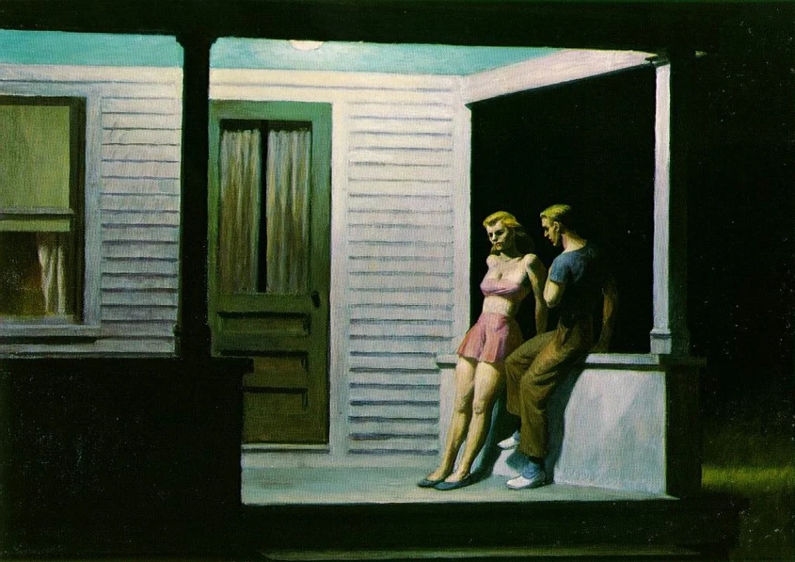
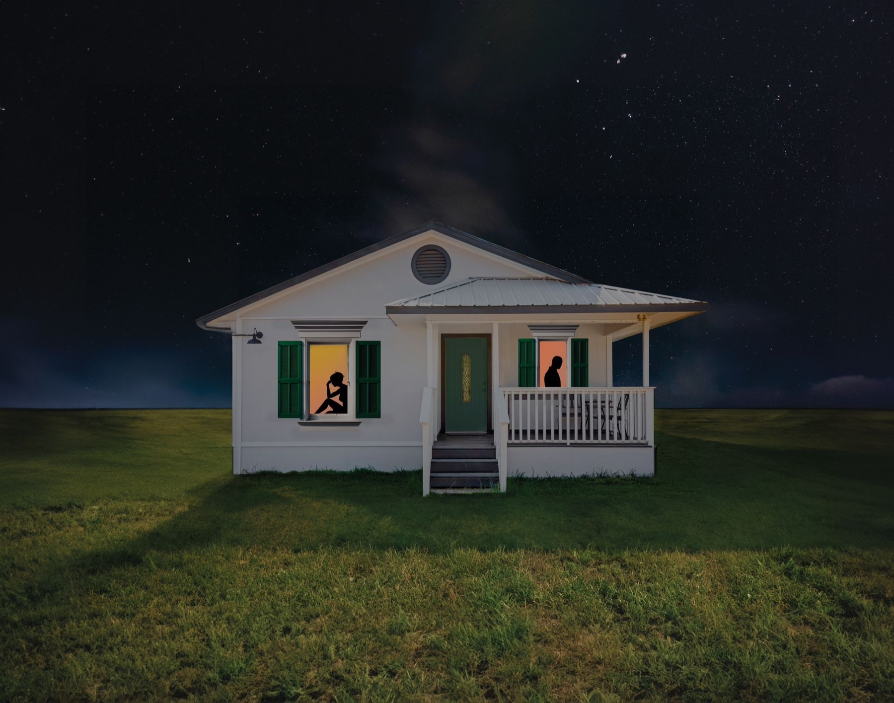

Quieta Distanza
Progettazione editorialeQuieta Distanza è un album immaginario che raccoglie canzoni sull’amore, la solitudine e la distanza.
Per la copertina mi sono ispirata a Edward Hopper, dalla sua capacità di congelare un momento, di lasciare tutto sospeso senza spiegarlo.

Edward Hopper
Ho preso quella sensazione e l’ho trasformata in un concept visivo mio, dove un istante immobile diventa la rappresentazione perfetta di un sentimento che non trova parole: qualcosa che resta lì, tra il desiderio e l’assenza.

Irene Lissi